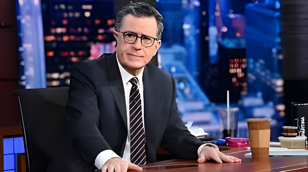

Le 21 mai 2026, Stephen Colbert a animé pour la dernière fois le Late Show depuis l'Ed Sullivan Theater de New York, mettant fin à une franchise emblématique de la télévision américaine vieille de 33 ans. La décision d'annulation, annoncée par CBS en juillet 2025, a été officiellement présentée comme un choix purement financier — mais elle s'est inscrite dans un contexte troublé : fusion de Paramount avec Skydance, règlement d'un procès intenté par Donald Trump contre la chaîne, et hostilité assumée du président envers l'animateur. Derrière la disparition d'une émission, c'est tout un modèle de la télévision de fin de soirée qui s'efface.
Le Late Show naît en 1993 lorsque David Letterman quitte NBC pour rejoindre CBS et inaugurer son propre programme depuis l'Ed Sullivan Theater. Pendant 22 ans, il en fait une institution de la télévision américaine, mêlant humour décalé, entretiens politiques et numéros musicaux. En 2015, Stephen Colbert lui succède après avoir incarné pendant neuf ans un personnage conservateur caricatural dans The Colbert Report sur Comedy Central. Sous sa direction, le Late Show prend un tournant plus ouvertement politique, devenant l'une des tribunes les plus regardées de la résistance culturelle face à Donald Trump.
Pendant neuf saisons consécutives, l'émission se maintient en tête des audiences du créneau 23h35, avec environ 2,4 millions de téléspectateurs par épisode. En 2026, elle reste la seule émission de late night à avoir gagné des spectateurs par rapport à l'année précédente. Deux jours avant l'annonce de son annulation, le Late Show était encore nominé aux Emmy Awards dans la catégorie meilleure émission de talk-show — pour la sixième fois.
Le 17 juillet 2025, lors d'un enregistrement devant public, Colbert informe lui-même ses spectateurs d'une nouvelle apprise la veille au soir : CBS met fin à l'émission en mai 2026. La salle répond par des huées. « Ce n'est pas seulement la fin de notre émission, c'est la fin du Late Show sur CBS. Je ne suis pas remplacé. Tout cela disparaît simplement. » Paramount et CBS publient un communiqué commun qualifiant la décision de « purement financière », ajoutant qu'elle n'est « en rien liée à la performance de l'émission, à son contenu, ni à d'autres événements en cours chez Paramount ».
La décision est pourtant reçue avec scepticisme. Elle intervient trois jours après que Colbert a vivement critiqué à l'antenne le règlement à l'amiable de 16 millions de dollars conclu par Paramount avec Donald Trump — un accord mettant fin à un procès du président contre CBS au sujet d'une interview de Kamala Harris diffusée dans 60 Minutes. Or Paramount cherchait alors à obtenir l'aval de l'administration Trump pour finaliser sa fusion avec Skydance Media. Pour de nombreux observateurs, le calendrier est accablant.
La toile de fond politique de l'annulation est difficile à ignorer. Stephen Colbert est l'un des critiques les plus acerbes de Donald Trump à la télévision américaine, et le président n'a jamais caché son hostilité à son égard. Le jour même de la diffusion du dernier épisode, Trump a publié un message sur Truth Social saluant ironiquement la longévité de l'animateur, sans dissimuler sa satisfaction. Plusieurs sénateurs démocrates, dont Adam Schiff, ont publiquement interrogé les motifs réels de CBS, estimant que le public méritait de savoir si des pressions politiques avaient joué un rôle.
La fusion entre Paramount Global et Skydance constitue l'autre variable centrale. Soumise à l'approbation de la FCC et, indirectement, à la bienveillance de l'exécutif américain, cette opération place Paramount dans une position délicate vis-à-vis du gouvernement. Le règlement du procès Trump contre CBS, critiqué par Colbert lui-même à l'antenne, illustre la vulnérabilité d'un groupe médiatique dont les décisions éditoriales sont désormais perçues — à tort ou à raison — comme tributaires d'impératifs commerciaux liés à l'approbation fédérale.
David Letterman quitte NBC et lance le Late Show sur CBS depuis l'Ed Sullivan Theater. CBS retrouve pour la première fois depuis 1993 une présence en late night. Letterman y anime l'émission pendant 22 ans.
Stephen Colbert prend la succession de Letterman. L'émission adopte un ton plus politique, notamment à partir de 2016, avec les campagnes présidentielles comme fil rouge permanent.
Le Late Show devient n°1 des audiences du créneau 23h35 pour neuf saisons consécutives, devançant le Tonight Show de Jimmy Fallon sur NBC. L'émission remporte un Peabody Award en 2021.
Colbert critique ouvertement à l'antenne le règlement à l'amiable de 16 millions de dollars conclu par Paramount avec Trump à la suite d'une plainte du président contre CBS au sujet d'une interview de Kamala Harris dans 60 Minutes.
CBS annonce la fin du Late Show en mai 2026. Colbert l'apprend la veille et annonce lui-même la nouvelle à son public. La salle réagit par des huées. L'émission venait d'être nominée pour la sixième fois aux Emmy Awards.
Colbert annonce la date exacte du dernier épisode — le 21 mai 2026 — lors d'une apparition dans le Late Night with Seth Meyers sur NBC. « C'est réel maintenant. Je ne suis pas ravi », confie-t-il.
Dernier épisode. Paul McCartney — qui avait joué sur cette même scène avec les Beatles en 1964 — est l'invité final. Jon Batiste et Elvis Costello se produisent également. L'émission se conclut sur une interprétation collective de Hello, Goodbye.
La disparition du Late Show dépasse la seule trajectoire d'une émission ou d'un animateur. Elle symbolise le recul structurel de la télévision hertzienne dans un paysage médiatique fragmenté par les plateformes de streaming, les réseaux sociaux et les podcasts. CBS laisse pour la première fois depuis 1993 son antenne sans programme de late night, avouant implicitement qu'aucun format de substitution ne serait économiquement viable dans ce créneau. Que la décision ait été dictée par la seule logique financière ou par des pressions politiques liées à la fusion Skydance — question que l'histoire n'a pas encore tranchée —, elle marque la fin d'une ère où la satire télévisée de fin de soirée constituait l'un des lieux centraux du débat démocratique américain.
On May 21, 2026, Stephen Colbert hosted the final edition of The Late Show from New York's Ed Sullivan Theater, bringing a 33-year CBS franchise to a close. The cancellation, announced in July 2025, was officially framed as a purely financial decision — yet it unfolded against a troubled backdrop: Paramount's merger with Skydance, a lawsuit settlement with Donald Trump, and the president's undisguised hostility toward Colbert. Behind the disappearance of a single show lies the slow decline of an entire model of American late-night television.
The Late Show was born in 1993 when David Letterman left NBC for CBS, inaugurating his own program at the Ed Sullivan Theater. Over 22 years, he transformed it into a cornerstone of American television, blending deadpan humor, political interviews and musical acts. In 2015, Stephen Colbert succeeded him — having spent nine years playing a caricatured conservative pundit on Comedy Central's The Colbert Report. Under his watch, The Late Show took an openly political turn, becoming one of the most-watched platforms for cultural pushback against Donald Trump.
For nine consecutive seasons, the show held the top spot in the 11:35 p.m. timeslot, averaging around 2.4 million viewers per episode. As late as 2026, it remained the only late-night program to have grown its audience compared to the previous year. Two days before the cancellation was announced, The Late Show had just received its sixth Emmy nomination for outstanding talk show.
On July 17, 2025, during a live taping, Colbert personally informed his studio audience of news he had learned the previous evening: CBS was ending the show in May 2026. The room responded with boos. "It's not just the end of our show, it's the end of The Late Show on CBS. I'm not being replaced. This is all just going away." Paramount and CBS issued a joint statement calling the move "purely a financial decision," adding it was "not related in any way to the show's performance, content or other matters happening at Paramount."
The decision was met with widespread skepticism. It came just three days after Colbert had criticized on air the $16 million settlement reached by Paramount with Donald Trump — a deal ending the president's lawsuit against CBS over a 60 Minutes interview with Kamala Harris. At the time, Paramount was seeking the Trump administration's blessing to finalize its merger with Skydance Media. For many observers, the timing was damning.
The political backdrop to the cancellation is hard to ignore. Stephen Colbert is one of Donald Trump's most pointed critics on American television, and the president had never concealed his disdain for him. On the very night of the final episode, Trump posted a message on Truth Social that ironically acknowledged the host's longevity — barely concealing his satisfaction. Several Democratic senators, including Adam Schiff, publicly questioned CBS's true motives, arguing that the public deserved to know whether political pressure had played a role.
The Paramount–Skydance merger was the other key variable. Subject to FCC approval and, indirectly, to the goodwill of the executive branch, the deal placed Paramount in a delicate position vis-à-vis the administration. The Trump settlement, which Colbert himself had criticized on air, illustrated the vulnerability of a media company whose editorial decisions were now perceived — rightly or wrongly — as hostage to federal approval.
David Letterman leaves NBC and launches The Late Show on CBS at the Ed Sullivan Theater. CBS has a late-night presence for the first time since 1993. Letterman anchors the franchise for 22 years.
Stephen Colbert takes over from Letterman. The show adopts a more explicitly political tone, especially from 2016 onward, with presidential campaigns as a recurring backdrop.
The Late Show becomes #1 in its timeslot for nine consecutive seasons, overtaking Jimmy Fallon's Tonight Show on NBC. The program wins a Peabody Award in 2021.
Colbert openly criticizes on air the $16 million settlement reached by Paramount with Trump over a lawsuit concerning a Kamala Harris interview on 60 Minutes.
CBS announces the end of The Late Show in May 2026. Colbert finds out the night before and breaks the news to his own audience. The studio responds with boos. The show had just received its sixth Emmy nomination.
Colbert announces the exact finale date — May 21, 2026 — during an appearance on NBC's Late Night with Seth Meyers. "It feels real now. I'm not thrilled with it," he admits.
Final episode. Paul McCartney — who had performed on the same stage with The Beatles in 1964 — is the last guest. Jon Batiste and Elvis Costello also perform. The show closes on a collective rendition of Hello, Goodbye.
The disappearance of The Late Show reaches beyond the arc of a single program or host. It stands as a symbol of the structural retreat of broadcast television in a media landscape fragmented by streaming platforms, social media and podcasts. CBS leaves its 11:35 p.m. slot empty for the first time since 1993, implicitly conceding that no replacement format would be economically viable. Whether the decision was driven purely by financial logic or by political pressures tied to the Skydance merger — a question history has yet to settle — it marks the end of an era in which late-night television satire was one of the central arenas of American democratic debate.